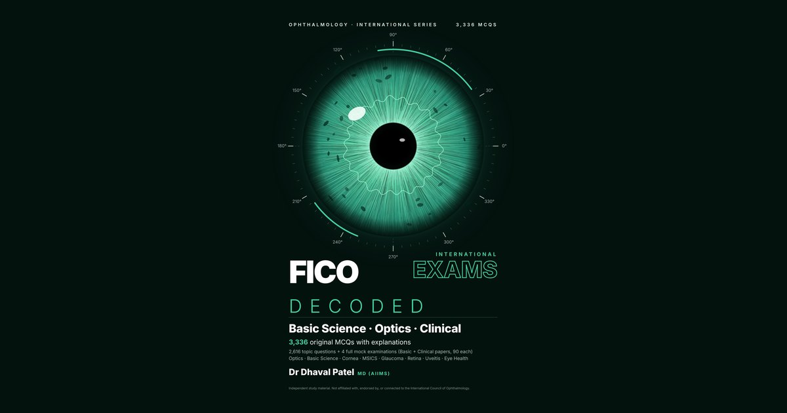
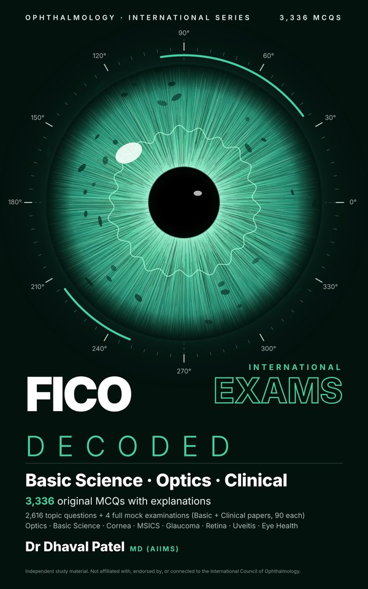

For: PG residents
Last updated: November 2026
FICO Decoded is a single-volume question bank for the examinations of the International Council of Ophthalmology (ICO), the pathway to the title of Fellow of the International Council of Ophthalmology (FICO). Written by Dr Dhaval Patel, MD (AIIMS), it holds 3,336 original MCQs: 2,616 topic questions in 16 chapters and 4 full mock examinations, each with a Basic Science paper and a Clinical Sciences paper of 90 questions.

3,336 original MCQs: 2,616 topic questions in 16 chapters + 4 full mock examinations (a Basic Science paper and a Clinical Sciences paper of 90 questions each).
Kindle edition, available on Amazon worldwide.
From FICO Decoded · Optics, Refraction & Instruments
Kestenbaum’s rule estimates the near add for a patient with 6/60 acuity as:
Answer: C. Kestenbaum’s rule estimates the add needed to read N8/1M print: the reciprocal of the Snellen fraction. For 6/60, 60/6 = +10 D, used at 10 cm. It is a starting point; the final magnification is adjusted by trial with real reading material.
Why not: A — Too low. B — Wrong. D — Too high.
Pearl: This reads about N5 to N8 print.
From FICO Decoded · Retina & Vitreous
Oguchi disease is a form of CSNB characterised by:
Answer: D. Oguchi disease is a form of CSNB with a golden fundus sheen that disappears after prolonged dark adaptation (Mizuo–Nakamura phenomenon). It is caused by SAG (arrestin) or GRK1 (rhodopsin kinase) mutations.
Why not: A — Tay–Sachs. B — RP. C — Fundus albipunctatus.
Pearl: Fundus albipunctatus shows white dots and delayed dark adaptation.
One question from each of ten chapters, taken from the book. Tap an answer to see the explanation.
For a timed paper, take the free FICO Decoded sample mock (50 questions from the book's first mock examination), or see all free mock tests.
Every Decoded book follows the same method: an original question, the reasoning behind the answer, why each wrong option is wrong, and a pearl. See the whole series.
| Book | Examination | Region |
|---|---|---|
| OKAT Decoded (3 volumes, 10,200 MCQs) | AIOS-OKAT | India |
| FRCOphth Part 1 Decoded (3,484 SBAs) | FRCOphth Part 1 | United Kingdom |
| FRCOphth Part 2 Written Decoded (4,725 SBAs) | FRCOphth Part 2 Written | United Kingdom |
| FICO Decoded (3,336 MCQs) | ICO examinations and FICO | International |
| OKAP & ABO Decoded (3,721 MCQs) | OKAP and ABO Written Qualifying Examination | United States |
| FEBO Decoded (3,721 MCQs) | EBO Diploma (FEBO) | Europe |
Where can I buy it? It is a Kindle book on Amazon in every country. Use the buttons above, or search "FICO Decoded" on your own Amazon store. You can read it on a Kindle or in the free Kindle app on a phone, tablet or computer.
Are the questions from past papers? No. Every question is original, written to test the same knowledge in the same single-best-answer style.
How do I report an error? Email drdpatel87@gmail.com. Corrections are welcome for future editions.
See also: OKAP, FRCOphth and ICO exam formats, ophthalmology exams abroad, about the author and all books by Dr Dhaval Patel.
Independent study material. Not affiliated with, endorsed by, or connected to the International Council of Ophthalmology. "ICO" and "FICO" are used only to identify the examinations this book prepares for. All questions are original and are not taken from any ICO examination paper. Candidates should confirm the current examination format with the examining body.
📘 Want more exam-ready material? See Most Commons in Ophthalmology on Kindle, or browse all my books.
How to cite this page
Patel D. FICO Decoded: ICO Exam Question Bank with 3,336 MCQs (Basic Science, Optics and Clinical). RPC Rounds (Sadbhaav Eye Clinic). Updated November 2026. Available at: https://www.sadbhaavclinic.com/fico-decoded.html. Accessed [date].
Looking for an eye specialist in Ahmedabad? Learn about our Eye Department or book a consultation with Dr. Dhaval Patel.